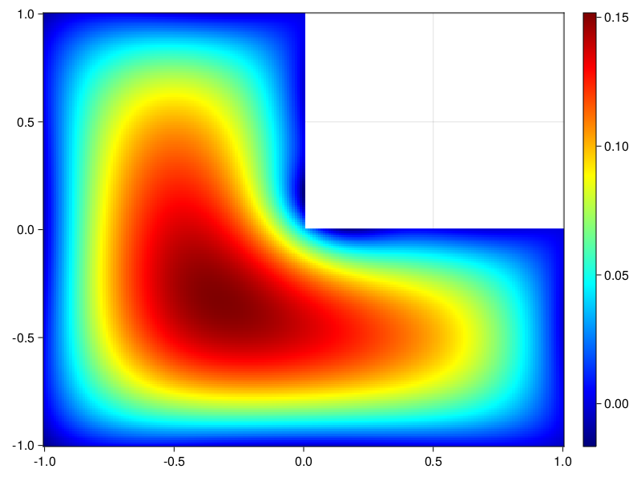

Poisson equation over an L-shaped domain
The example is taken from here. We showcase define a PDE on an L-shaped domain
using ModelingToolkit, DomainSets, Optimization, OptimizationOptimJL
using DomainSets: ×
using Sophon
@parameters x y
@variables u(..)
Dxx = Differential(x)^2
Dyy = Differential(y)^2
eq = Dxx(u(x,y)) + Dyy(u(x,y)) ~ -1.0
eqs = [eq => (-1..0) × (-1..0),
eq => (-1..0) × (0..1),
eq => (0..1) × (-1..0)]
bc = u(x,y) ~ 0.0
boundaries = [(-1 .. -1) × (-1..1),
(-1..0) × (1..1),
(0..0) × (0..1),
(0..1) × (0..0),
(1..1) × (-1..0),
(-1..1) × (-1 .. -1)]
bcs = [bc => boundary for boundary in boundaries]
pde_system = Sophon.PDESystem(eqs, bcs, [x,y], [u(x,y)])PDESystem
Equations:
Differential(x)(Differential(x)(u(x, y))) + Differential(y)(Differential(y)(u(x, y))) ~ -1.0 on (-1..0) × (-1..0)
Differential(x)(Differential(x)(u(x, y))) + Differential(y)(Differential(y)(u(x, y))) ~ -1.0 on (-1..0) × (0..1)
Differential(x)(Differential(x)(u(x, y))) + Differential(y)(Differential(y)(u(x, y))) ~ -1.0 on (0..1) × (-1..0)
Boundary Conditions:
u(x, y) ~ 0.0 on (-1..-1) × (-1..1)
u(x, y) ~ 0.0 on (-1..0) × (1..1)
u(x, y) ~ 0.0 on (0..0) × (0..1)
u(x, y) ~ 0.0 on (0..1) × (0..0)
u(x, y) ~ 0.0 on (1..1) × (-1..0)
u(x, y) ~ 0.0 on (-1..1) × (-1..-1)
Dependent Variables: Symbolics.Num[u(x, y)]
Independent Variables: Symbolics.Num[x, y]
chain = FullyConnected((2,16,16,16,1), tanh)
pinn = PINN(chain)
sampler = QuasiRandomSampler(200, 30)
strategy = NonAdaptiveTraining()
prob = Sophon.discretize(pde_system, pinn, sampler, strategy)
res = Optimization.solve(prob, BFGS(); maxiters=1000)
using CairoMakie
xs = -1:0.01:1
ys = -1:0.01:1
u_pred = [ifelse(x>0.0 && y>0.0, NaN, pinn.phi([x,y], res.u)[1]) for x in xs, y in ys]
fig, ax, hm = heatmap(xs, ys, u_pred, colormap=:jet)
Colorbar(fig[:, end+1], hm)
fig